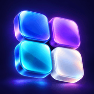

RadioFran
El sonido de Puerto Rico.
Abrir app
Fran AppsMi GitHubTU ESPACIO DIGITAL
Tus herramientas, tus juegos, tus ideas.
Elige una app y sigue creando.
EXPLORA TU COLECCIÓN
17 aplicaciones
El sonido de Puerto Rico.
Abrir appDescubre la Isla del Encanto.
Abrir appEncuentra tu próximo ahorro.
Abrir appFechas, recuerdos y momentos.
Abrir appExplora efectos para tus ideas.
Abrir appAdministra tus usuarios Plex.
Abrir appCOP y USD, al instante.
Abrir appFirma y prepara tus documentos.
Abrir appTus cuentas bajo control.
Abrir appCrea, edita y prueba tus ideas.
Abrir appTus canales en un solo lugar.
Abrir appUna aventura para desconectar.
Abrir appCada día cuenta.
Abrir appUn espacio para nuestra isla.
Abrir appPon a prueba lo que sabes.
Abrir appOrganiza tus pruebas.
Abrir appTu Huevito Digital.
Abrir appPrueba con otro nombre o categoría.